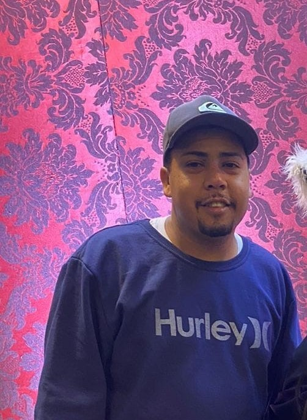

EQUIPE VitalFam
"Conheça o Time de Proteção da VitalFam: Especialistas em Cuidar do que é Mais Importante para
Você!"
SEGURADORA SILVA
Atendimento ao Cliente:
Denise Mãe.
Dêem as boas-vindas a Denise, nossa mais nova integrante! Com uma paixão inigualável por auxiliar
famílias durante suas viagens, Denise chega com vasta experiência e dedicação para garantir que cada
cliente se sinta seguro e assistido em todas as etapas.
Nascida em 02/02/1984, aos 39 anos, Denise traz consigo um profundo entendimento das
necessidades das famílias em termos de segurança em viagens. Sua presença aqui fortalece nosso
compromisso em oferecer um atendimento excepcional e uma proteção abrangente aos nossos clientes.
Denise é responsável por lidar diretamente com os clientes, oferecendo orientação sobre os diferentes
planos de seguro de viagem, esclarecendo dúvidas e garantindo que todas as necessidades sejam atendidas.
Estamos entusiasmados para presenciar as valiosas contribuições de Denise à família VitalFam.
Desenvolvimento de Estratégias de Marketing Digital:
Lukas Tio.
É com alegria que recebemos Lukas Reis, nosso novo integrante! Aos 30 anos, Lukas traz
consigo uma energia contagiante e uma paixão pela experiência do viajante moderno.
Nascido em 24/06/1993, sua visão dinâmica e comprometimento em oferecer soluções
excepcionais prometem elevar ainda mais nossos serviços de seguros de viagem.
Com sua energia contagiante e possíveis habilidades em marketing, Lukas pode focar na criação de
estratégias
digitais para promover os serviços da empresa, alcançando um público mais amplo de viajantes
interessados em
seguros.
Seja bem-vindo, Lukas! Estamos ansiosos para sua contribuição em fazer da VitalFam uma referência em
atendimento e inovação.
Assistente de Pesquisa de Destinos:
Evelin Irmã.
Evelin Adriele, nossa mais recente adição! Aos 19 anos, ela traz uma energia
contagiante e uma vontade incrível de aprender.
Nascida em 11/04/2004, Evelin é a representação do talento jovem que promete trazer
novas ideias e perspectivas para a VitalFam.
Evelin ajuda na pesquisa de destinos populares, atividades emergentes e preferências de viagens entre os
jovens, contribuindo para o desenvolvimento de pacotes de seguro de viagem específicos para esse
público.

Analista de Dados e Tendências de Viagens:
Primo Igor.
Com alegria, damos as boas-vindas a Igor, nosso mais recente membro! Aos 26 anos, ele
traz consigo uma combinação única de experiência e entusiasmo, prometendo ser um catalisador para o
crescimento da nossa equipe.
Nascido em 30/04/1997, Igor traz uma energia contagiante e uma determinação inabalável.
Sua bagagem de experiência pode vir a fortalecer áreas estratégicas da VitalFam, potencialmente
contribuindo para aprimorar nossos serviços e explorar novas oportunidades no mercado de seguros de
viagem.
Sua presença reforça nosso compromisso em atrair talentos dedicados e dinâmicos para a VitalFam,
mantendo nosso padrão de excelência e inovação.
Com habilidades analíticas, Igor pode coletar e analisar dados de viagens passadas para identificar
tendências emergentes, ajudando a empresa a ajustar seus serviços de acordo com as necessidades atuais
dos viajantes.